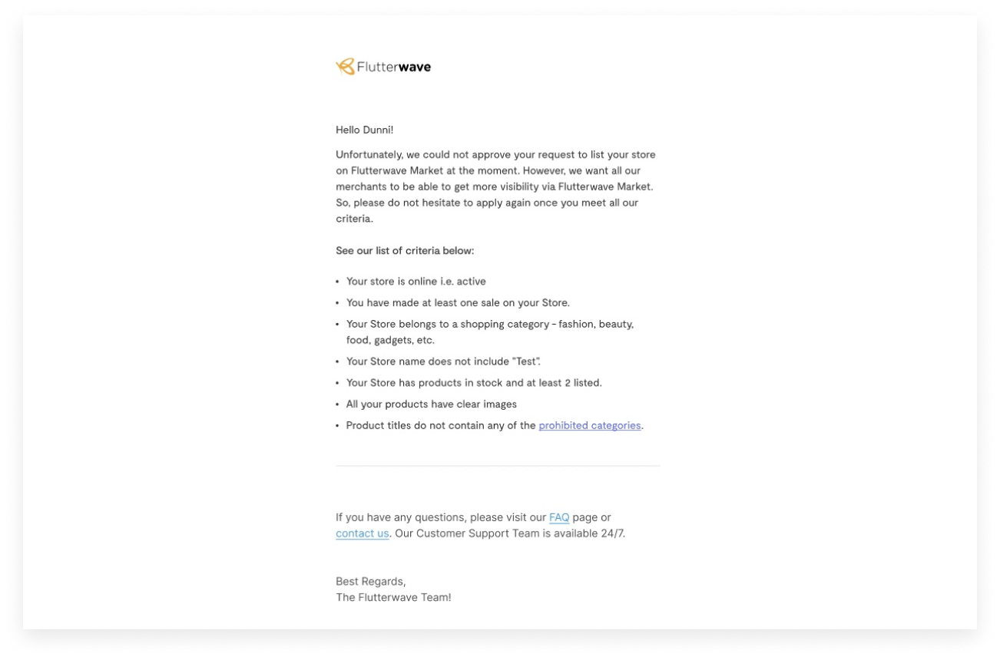
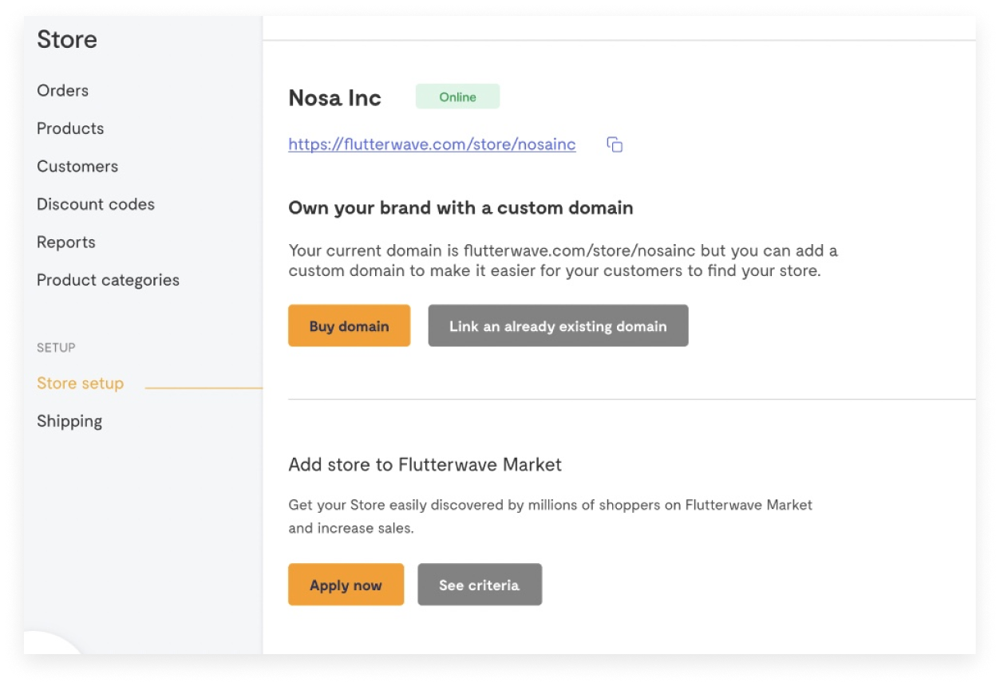
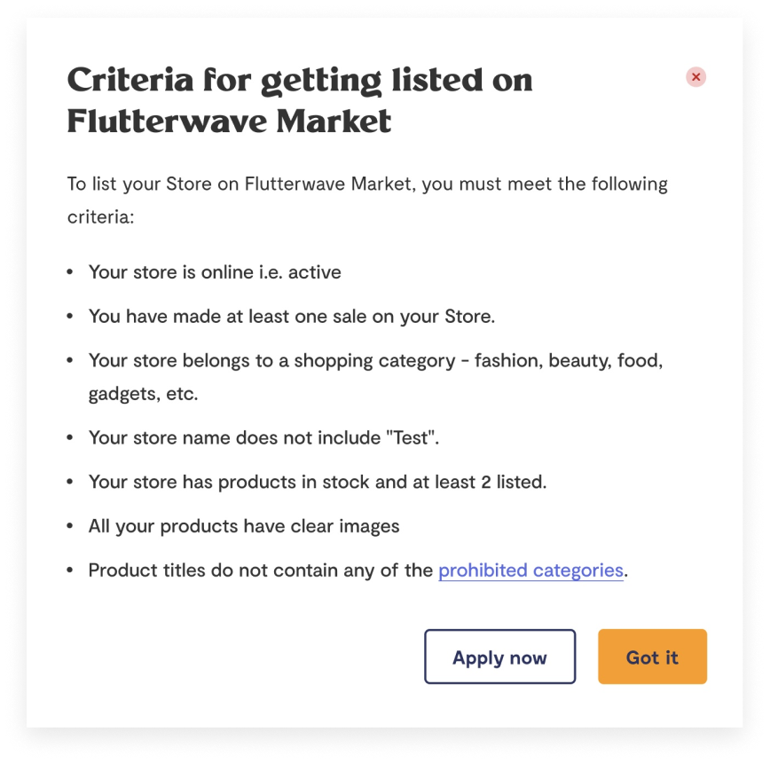
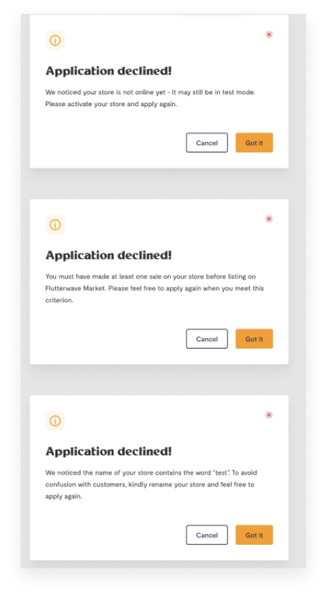
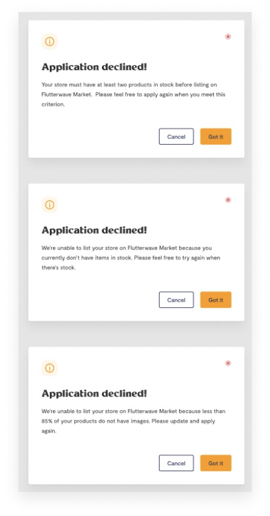
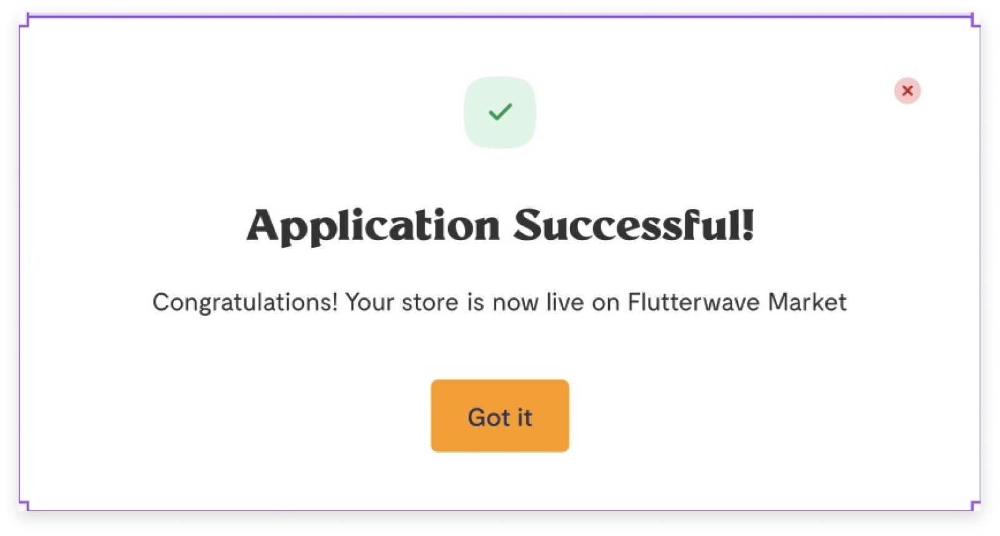

Summary
While any business can open a Flutterwave Store and list a product, Flutterwave Marketplace is an exclusive listing for select Flutterwave stores that meet the eligibility criteria.
After introducing Flutterwave Market, parts of the new dashboard included a flow where Store owners can apply to include their store on Flutterwave Market.
Product: Listing a store on Flutterwave Marketplace
Company: Flutterwave Store & Flutterwave Market
The Problem
1.
Store owners weren’t sure what all the eligibility criteria were
2.
When a Store Owner got rejected, they weren’t always sure why
3.
They received the same generic piece of rejection.

Users had to check by themselves which of the eligibility criteria they didn’t meet
How I approached the problem
For the first problem, which was not knowing what they needed to be eligible for a listing, I suggested introducing a modal that only just listed all the criteria.
We needed to make sure that people saw this on their dashboard before proceeding to apply, to reduce the margin of error.

I suggested a clickable “See criteria” button which when clicked, displays all criteria for listing a store on Flutterwave Market.

Modal pops up when a user clicks on “See criteria”
For the second problem, to make sure users got specific rejections, I worked with the PM and backend engineer to create individual modals displaying reasons. I got a list of scenarios and created a copy for each modal as displayed below.


Different modals pop up for different kinds of rejections
The success screen remained the same.
